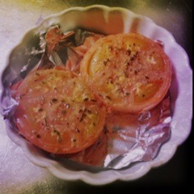

| 2012/09 24 Mon | 239回目*marika |
いつも読んでくださってる方、
初めて読んでくださった方、
コメントしてくださった方、
ありがとうございます！
雨だねー

アンニュイ。
**********
 まりっか単推しに
まりっか単推しに
なってもいいですか？
 うあーーー><////
うあーーー><////
嬉しいです‼
握手会場で渡されたファンレターと
郵便で送ったファンレター
どっちもみてますか？
届いたら読んでます
 話したい外国語とかある？
そんなん！日本語しゃべれるだけで
話したい外国語とかある？
そんなん！日本語しゃべれるだけで
じゅーぶんよ

**********
ちょっと今日は、、
家にトマトがあったので
焼きトマト作ったよ

じゃん！

私にだってできるんだあー
焼くだけだもの。
...
やーーーーーーーっと
寒くなってきた♪
扇風機はもう必要ないね

買った秋服早く着たい‼

ぐるカー衣装でバイバイ

まりか
コメント(167)
2012/09/24 23:48